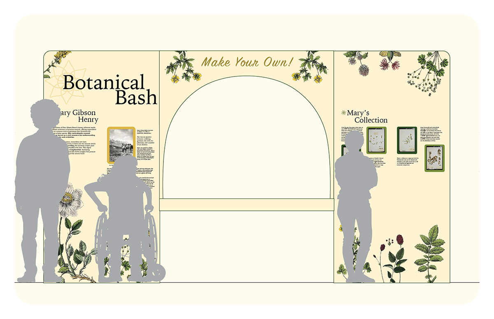
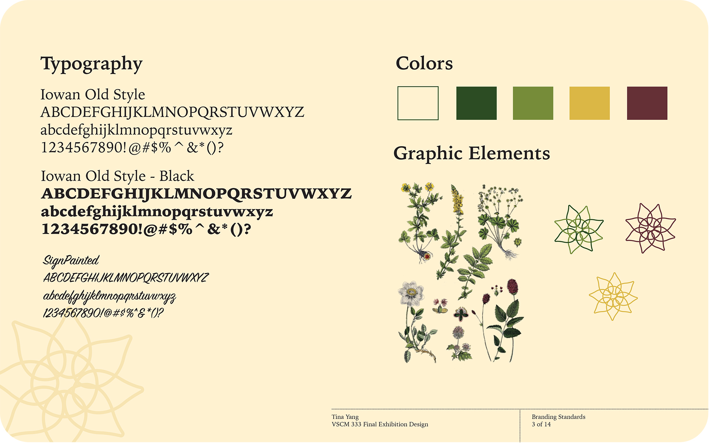
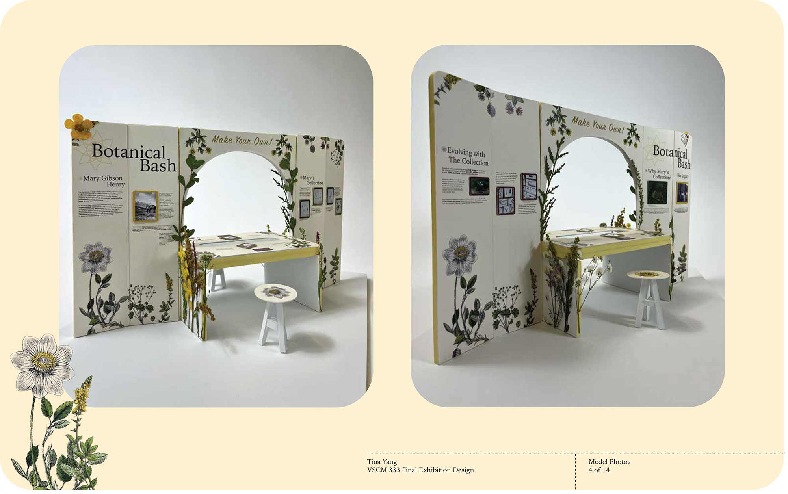

Exhibitions tell stories, change perspectives and enhance visitors’ experience of the art that is presented. Botanical Bash tells the story of Mary Gibson Henry and her long life dedication to the science and art of her botanical specimen collection. Through a carefully curated space of her collection, alongside with an activity table, visitors can learn through the art of viewing and doing.
  